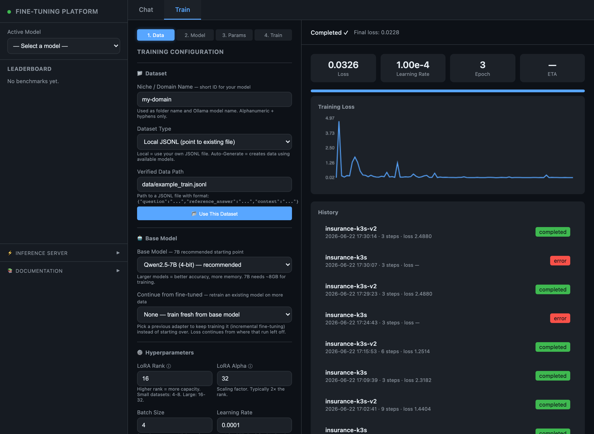
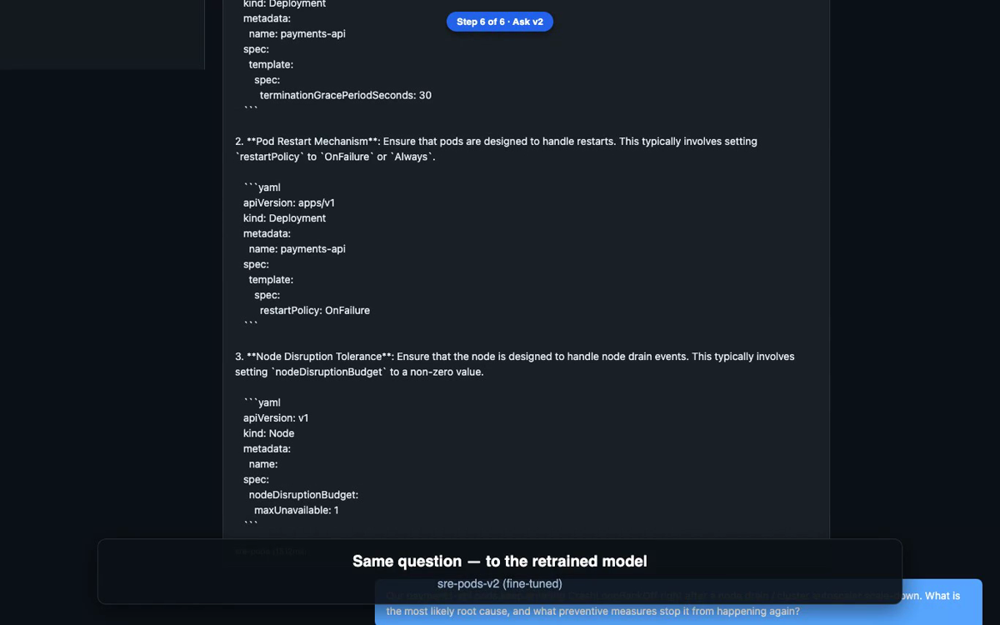

Install the Fine-Tuning Platform on a Kubernetes cluster — one Helm command from a public image. Train, retrain, and serve LoRA fine-tuned models from a single pod.
One stateful pod (the app is single-instance by design) exposing the
web UI on :7100 and an OpenAI-compatible inference API on :7200,
backed by EBS volumes for models, datasets, the HuggingFace cache, and logs. An
optional Ollama sidecar provides base-model chat. In-cluster it runs the
HuggingFace/PyTorch CPU backend — works on any amd64 node.
Single replica — in-memory training state + RWO volumes. Scale the node, not the pod.
models, datasets, HF cache, logs on EBS (gp3) — survive restarts.
Two sample datasets baked in & auto-seeded → ready in the Train dropdown.
Optional base-model chat in-pod; fine-tuned models served by :7200.
kubectl pointed at your cluster: aws eks update-kubeconfig --name <cluster> --region <region>helm v3gp3)ghcr.io (image) and huggingface.co (base model on first train). Air-gapped? See the build path.kubectl get nodes -o wide # confirm amd64 + Ready
kubectl get storageclass # confirm gp3 (or note your class)
The image ghcr.io/t4tarzan/finetune-platform:latest is public (amd64) and is
the chart's default, so install is one command — no docker build, no pull secret:
helm install finetune-platform charts/finetune-platform \
--namespace finetune --create-namespace \
--set persistence.storageClass=gp3 \
--set ollama.enabled=true
kubectl -n finetune rollout status deploy/finetune-platform # first boot pulls the base modelOr run the bundled one-liner: bash scripts/install-eks.sh
--set image.repository=$IMAGE:
REG=<acct>.dkr.ecr.<region>.amazonaws.com
aws ecr create-repository --repository-name finetune-platform || true
aws ecr get-login-password --region <region> | docker login -u AWS --password-stdin $REG
docker buildx build --platform linux/amd64 -t $REG/finetune-platform:latest --push .AmazonEC2ContainerRegistryReadOnly) — no pull secret.
Quick (no ingress):
kubectl -n finetune port-forward svc/finetune-platform 7100:7100
# open http://localhost:7100LoadBalancer — its own external address:
helm upgrade finetune-platform charts/finetune-platform -n finetune --reuse-values \
--set service.type=LoadBalancer
kubectl -n finetune get svc finetune-platform -w # grab EXTERNAL-IPShared nginx under a sub-path (e.g. https://<host>/finetune-platform):
helm upgrade finetune-platform charts/finetune-platform -n finetune --reuse-values \
--set ingress.enabled=true --set ingress.className=nginx \
--set basePath=/finetune-platformbasePath sets BASE_PATH in the pod (the UI prefixes every API call)
and auto-configures the nginx ingress (regex path + a rewrite-target that
strips the prefix). Leave it empty for a dedicated host or LoadBalancer.
The Ollama sidecar starts empty — pull one so the chat dropdown isn't empty:
kubectl -n finetune exec -c ollama deploy/finetune-platform -- ollama pull qwen2.5:0.5b(Fine-tuned models you train & export don't need this — they're served by :7200.)
Open the UI → Train tab. You should see the training console with the dataset picker, base-model + LoRA settings, the live loss chart, and run history:

The incremental-improvement demo (datasets are pre-seeded):
dataset_v1.jsonl (100 rows) → Use This Dataset120 → Start Training (loss falls ~3.4 → ~0.03)dataset_v2.jsonl (150 rows) → Continue from fine-tuned → v1 → retrain (loss continues lower)
| Setting | Default | Notes |
|---|---|---|
resources | 1–3 CPU / 4–12 GiB | Raise for larger models |
persistence.models | 20 Gi | Adapters + merged models (GB each) |
persistence.hfCache | 30 Gi | Base-model downloads |
persistence.storageClass | gp3 | "" = cluster default; EFS for RWX |
helm uninstall finetune-platform -n finetune
kubectl -n finetune delete pvc -l app.kubernetes.io/name=finetune-platform # also deletes data